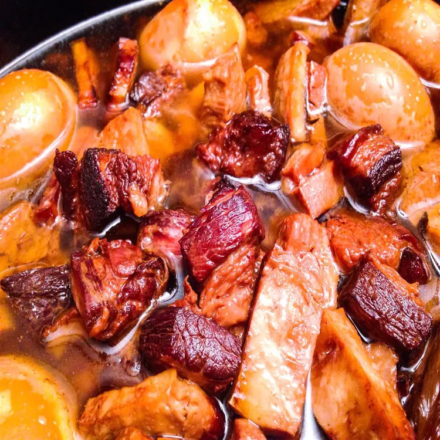

Slow-Cooked Red Braised Pork Belly

Summary
This is one of the most common Chinese household dishes. You almost never find this dish in restaurants because it takes a long time to cook and because it is gloriously fatty. Serve with steam rice and your choice of vegetables.
Ingredients
- 1 1/2 pounds pork belly, cut into bite-sized pieces
- 1/4 cup vegetable oil
- 3 tablespoon brown sugar
- 1/4 cup dark soy sauce
- 1/4 cup Shaoxing rice wine
- 1/4 cup light soy sauce
- 4 scallions, halved
- 4 sliced fresh ginger
- 4 star anise pods
- water to cover
- 1/2 (8 ounce) package vegetarian chicken substitute, diced (Optional)
- 6 hard-boiled eggs, peeledd (Optional)
Directions
- Fill a large pot with water and bring to a boil. Add pork belly; cook until starting to soften, about 5 minutes. Drain.
- Heat vegetable oil and brown sugar in a wok or large skillet over medium heat until sugar is melted. Add pork; cook until browned on all sides, about 2 minutes. Add dark soy sauce; cook and stir until flavors combine, about 5 minutes.
- Transfer pork mixture to a slow cooker. Add rice wine, light soy sauce, scallions, ginger, and star anise. Pour in enough water to just cover the pork.
- Cook on Low until pork is tender, about 6 hours. Add diced chicken substitute, hard-boiled eggs, and more water to cover.
- Cook on Low until eggs absorb cooking liquid, rotating halfway through, about 1 hour more.